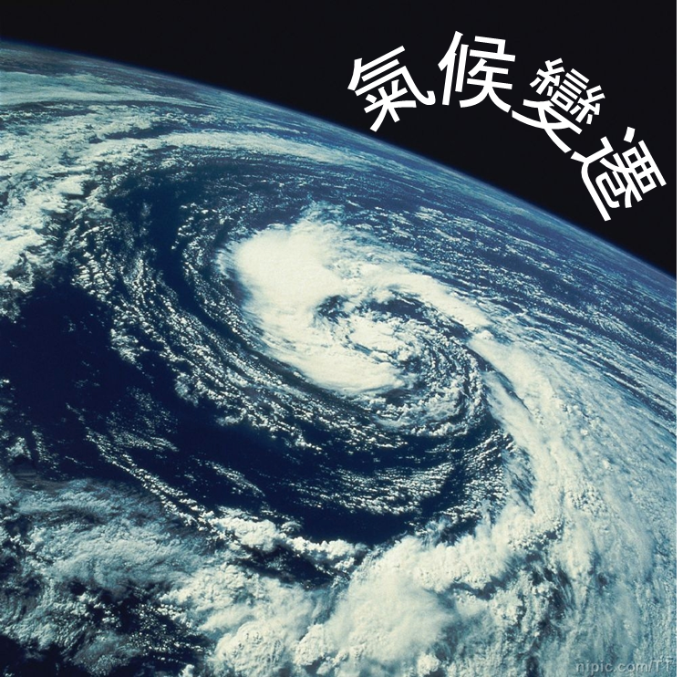
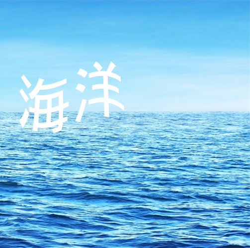
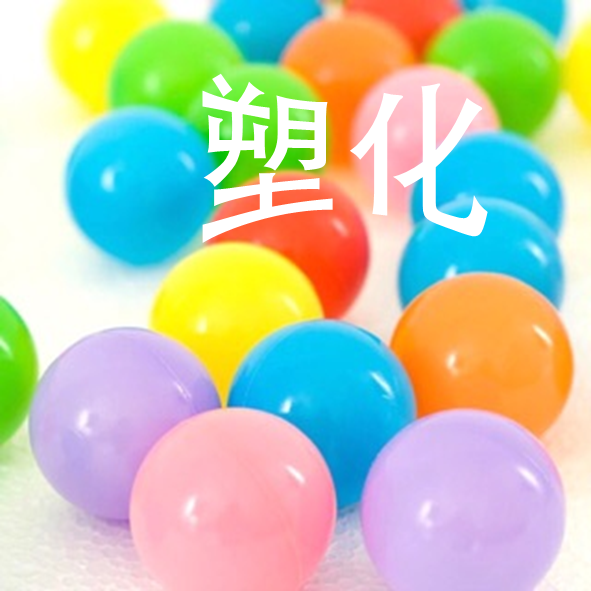
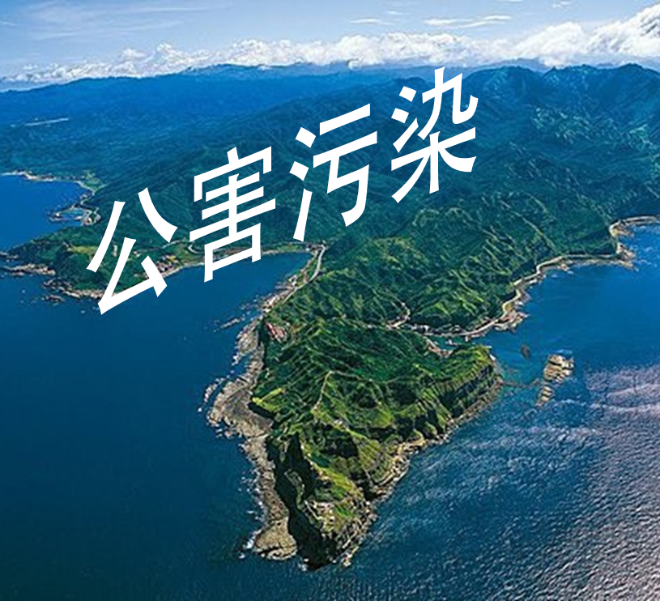

氣候變遷
「冬天來了，春天還會遠嗎？」詩人雪萊這句鼓舞人心的名言。
您也許知道，氣候變遷、全球暖化已使北極海冰以驚人的速度正在消融。
北極冰融，使得北極地區門戶大開，石油公司和捕撈船隊得以一路向北、長驅直入，駛向從前不曾抵達的領域；但您可知道，他們敲開北極大門，正貪婪地利用各種方式想開採這片位在地球極北、未經探勘的純潔海域嗎？

海洋
您可有機會潛進大海，欣賞美麗的海洋生態嗎？澄藍的海下面，覆蓋著地球80%的生物，海浪推動水流，供給氧氣、營養與能量，平衡氣候，孕育地球的生命。
可是海洋正處於極端危險的境地。
我們苛索海洋太多了，尤其是過度捕撈，大型船隊使用工業化捕魚方式，嚴重威脅有限的漁業資源。
再不停止現今大規模的捕撈方式，將使脆弱的海洋生態系崩潰，未來可能只剩水母和浮游生物可供人類食用。

塑化危機
聞「塑」色變的滅塑年代來了！從擔憂個人健康塑化程度到自發行動倡議，今年特別在幾個動物受害事件得到驗證，公眾並因此能更警覺、意識到海陸同歸一體的臍帶性，塑膠垃圾害到生物，終將經食物鏈反作用回到人類身上。

公害污染
無論是工業製造所使用的化學物質與生產後的廢棄物排放，消費性產品使用的化學物質透過全球銷售網絡遍及各處，甚至是食物鏈的生物累積都會使各類有毒有害物質散布生活的每個角落。
被無形化學物質汙染的河川中、土地上的各種魚蝦或養殖畜牧動物；每天使用的手機、電視、筆記型電腦等電子產品，我們每天穿上身的潮流服飾，甚至是家中擺設或嬰幼兒玩具，有毒物質以難以想像的途徑滲透藏匿於我們每天生活當中！